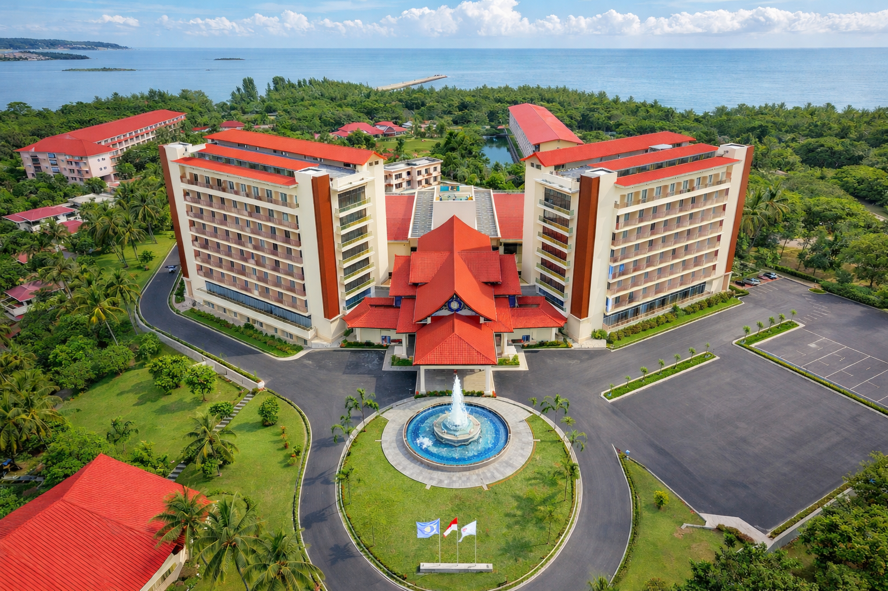
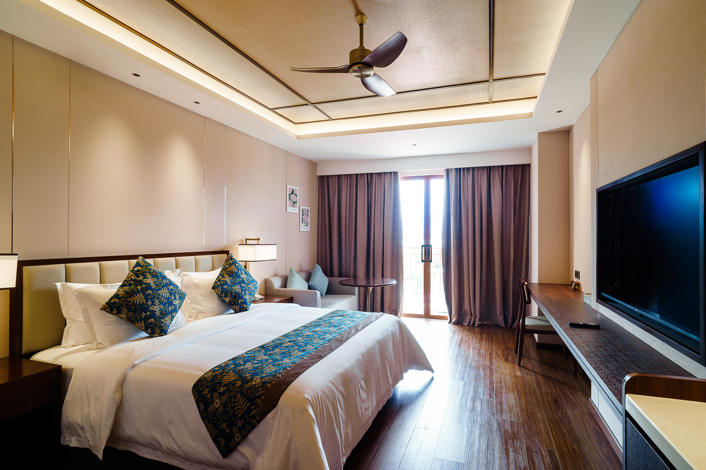
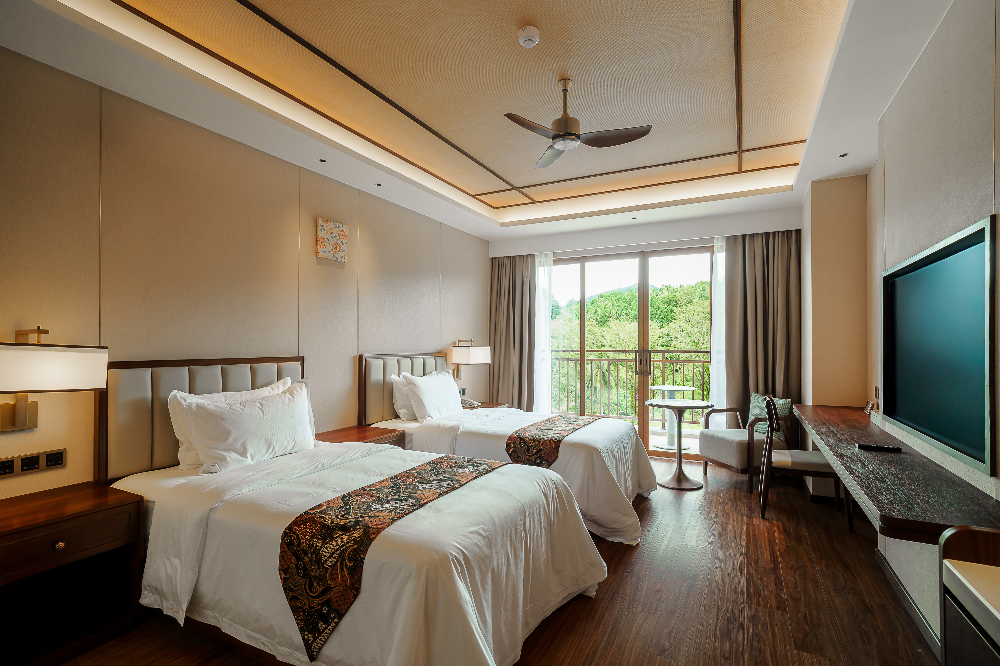
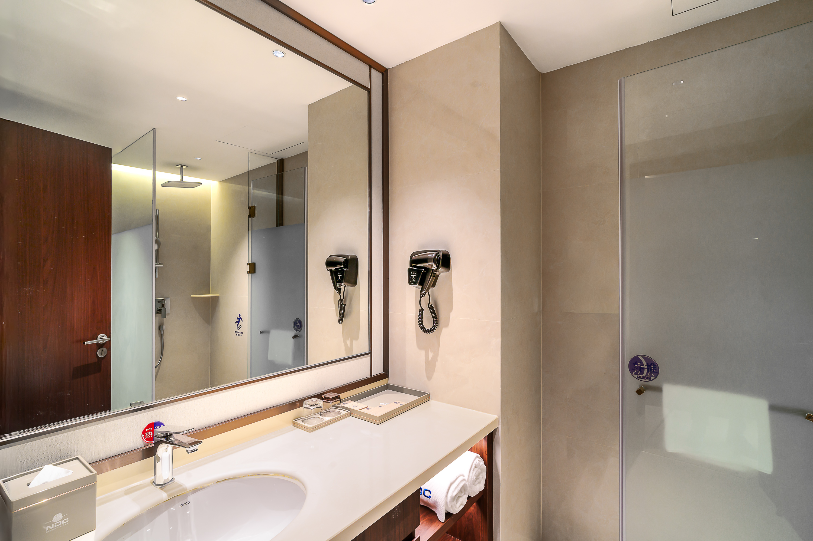
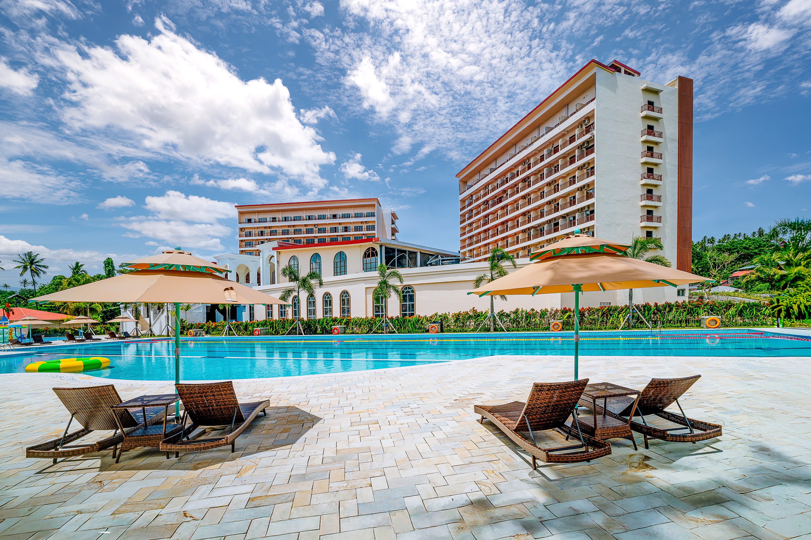
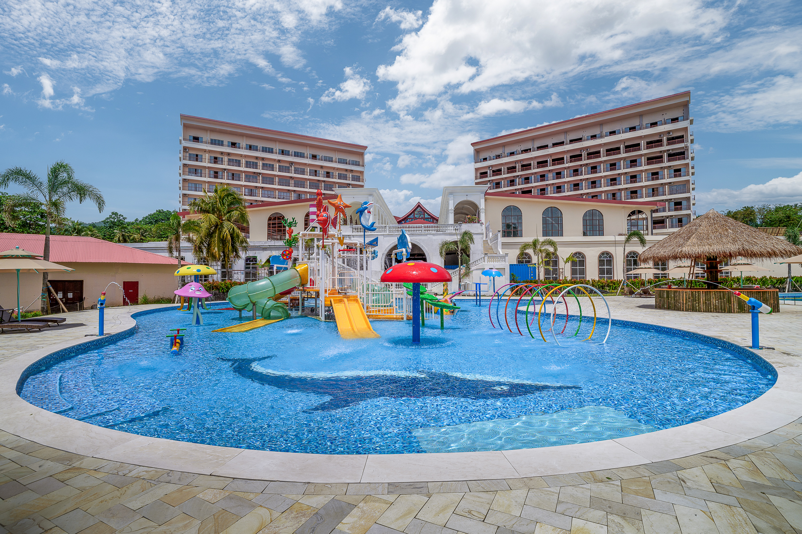
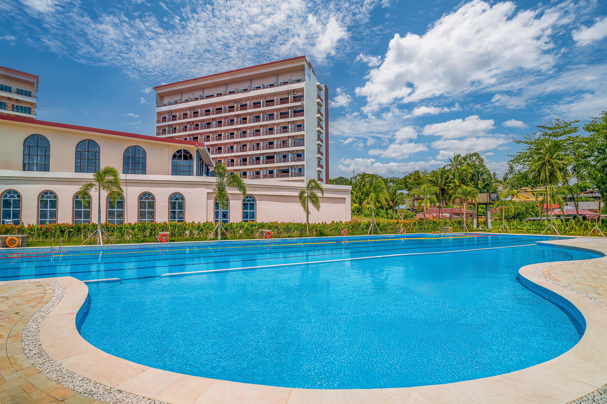
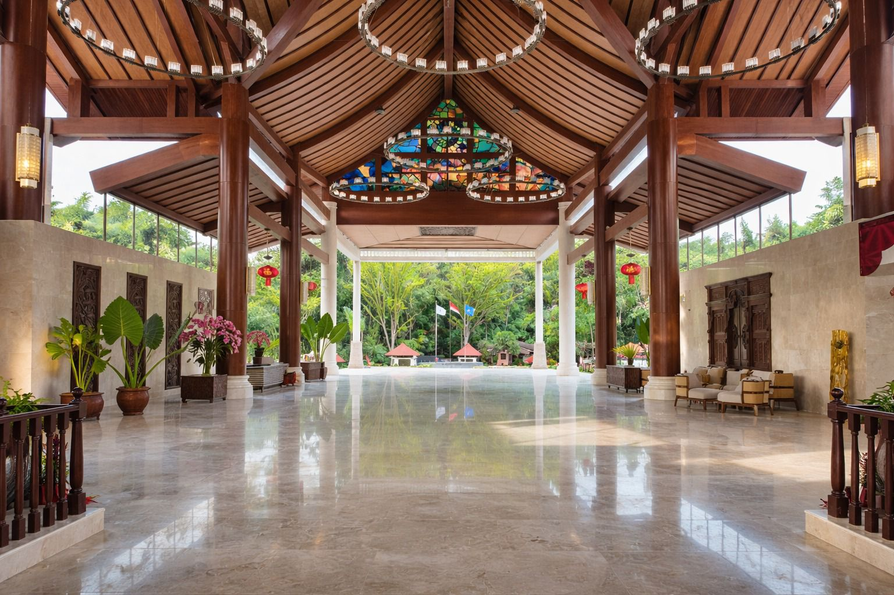
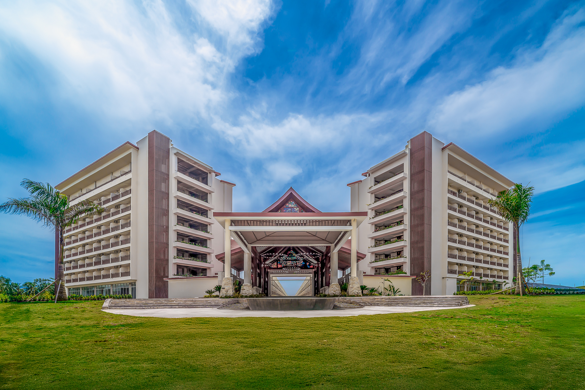

NDC 리조트 & 스파 마나도
NDC Resort & Spa Manado
가족 휴양과 해양 액티비티를 함께 담는 마나도 해안형 리조트

마나도는 발리나 롬복보다 아직 덜 붐비는 인도네시아 해양 휴양지입니다. NDC 리조트 & 스파는 바다 전망과 열대 정원, 여유로운 리조트 분위기를 함께 갖춘 해안형 리조트로, 부나켄 스노클링과 아일랜드 호핑을 엮은 자유여행에 잘 어울립니다. 가족, 커플, 액티비티형 여행자 모두에게 두루 어울리는 마나도 리조트입니다.
객실과 리조트 전망
넓은 객실과 리조트형 동선을 갖춰 일정 사이사이에 쉬어가기 좋습니다. 객실은 타입에 따라 전망과 구조가 달라질 수 있습니다. 바다와 정원, 수영장을 오가며 마나도에서의 휴양감을 차분하게 이어갈 수 있습니다.




레스토랑
리조트 안에서 식사와 휴식을 이어갈 수 있는 다이닝 공간을 갖추고 있습니다. 조식이나 식사 포함 여부는 예약 상품 조건에 따라 달라질 수 있습니다. 긴 이동 없이 리조트 안에서 식사와 휴식을 해결하고 싶은 가족 여행객에게 특히 편리합니다.


부대시설
NDC 리조트 & 스파는 수영장, 키즈 워터파크, 스파 시설을 중심으로 가족형 휴양과 커플 여행에 두루 어울립니다. 부나켄 해양국립공원으로 향하는 스노클링, 다이빙, 아일랜드 호핑 일정과도 연결하기 좋아 마나도 바다를 즐기는 거점으로 활용하기 좋습니다. 키즈 시설과 액티비티 운영은 현지 사정과 예약 상품 조건에 따라 달라질 수 있습니다.




※ 객실 전망, 조식, 픽업, 스파와 해양 액티비티 운영은 예약 상품 및 현지 사정에 따라 달라질 수 있습니다.